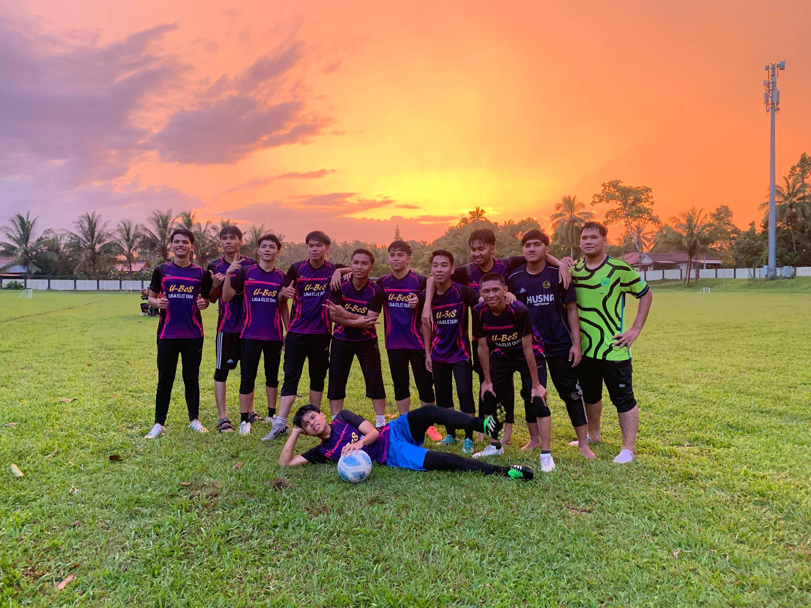
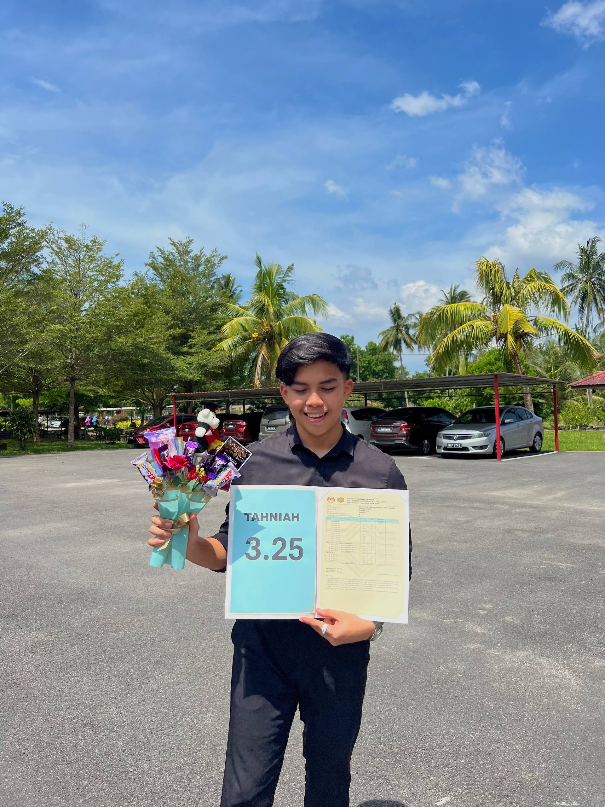
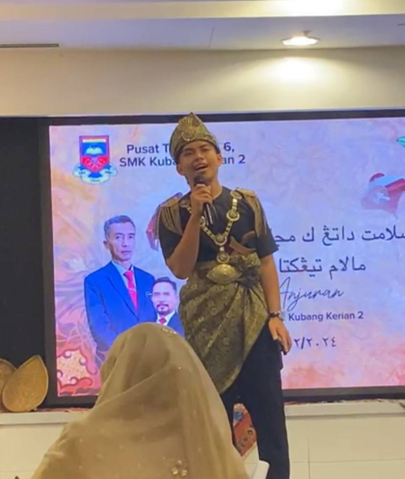

My achievements reflect my dedication, responsibility, and willingness to improve myself. Through academic activities, teamwork, and personal experiences, I have developed confidence, communication, and problem-solving skills.

Football
I proudly contributed to my team’s success in the Inter-District Football League, helping us secure the championship title. My performance in the final match earned me the Man of the Match award, reflecting my dedication, teamwork, and commitment to achieving our goals.

Outstanding Student Award
I received the Outstanding STPM Student Award and was recognized as a target student for my academic performance. This achievement reflects my hard work, perseverance, discipline, and determination to achieve excellence in my studies.

Singing Competition
During my STPM studies, I participated in a school singing competition and achieved First Place. This accomplishment enhanced my self-confidence, stage presence, and communication skills while teaching me the importance of dedication, perseverance, and performing under pressure.
🏆 The Motivation Behind My Achievements
My favourite song Bye from Arian Grande. This song helps motivate and encourage me to stay productive, especially when completing assignments or doing important tasks. Listening to it gives me positive energy, improves my focus, and helps me stay calm and concentrated, allowing me to manage my work more effectively and maintain motivation throughout the process.